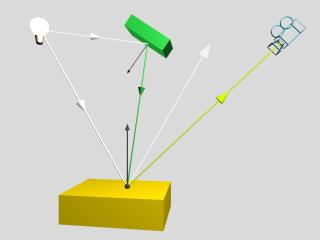

Com es dedueix del paràgraf anterior, els objectes de l'escena actuen com a focus de llum indirecta reflectint/transmeten part de la llum que els hi arriba. Aquesta llum pot incidir sobre altres objectes i afectar al seu color. A més a més, els objectes poden actuar com a obstacles de llum emesa pels focus o reflectida d'altres objectes (produeixen ombres). Si al punt Q no l'hi arriba llum d'un focus F degut a un objecte A, és dirà que A fa ombra a Q. Si al punt Q no li arriba part de la llum d'un focus no puntual degut a un objecte A, es dirà que Q està a la penombra.
|  |